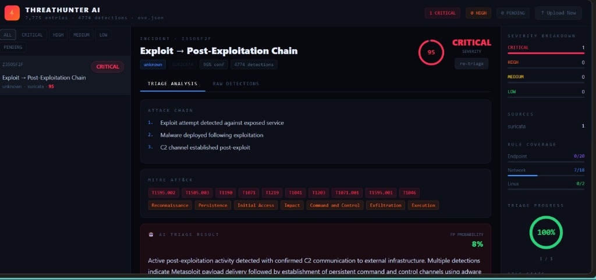
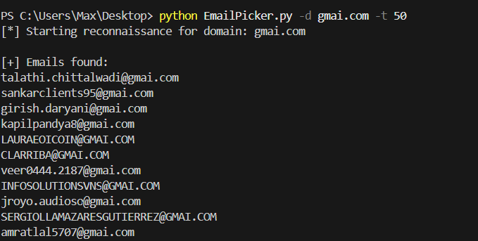
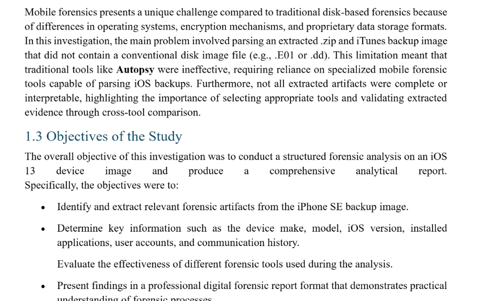
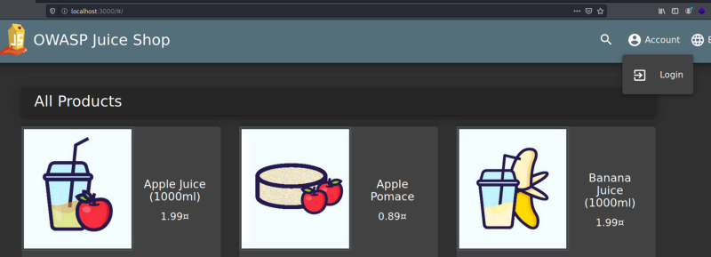
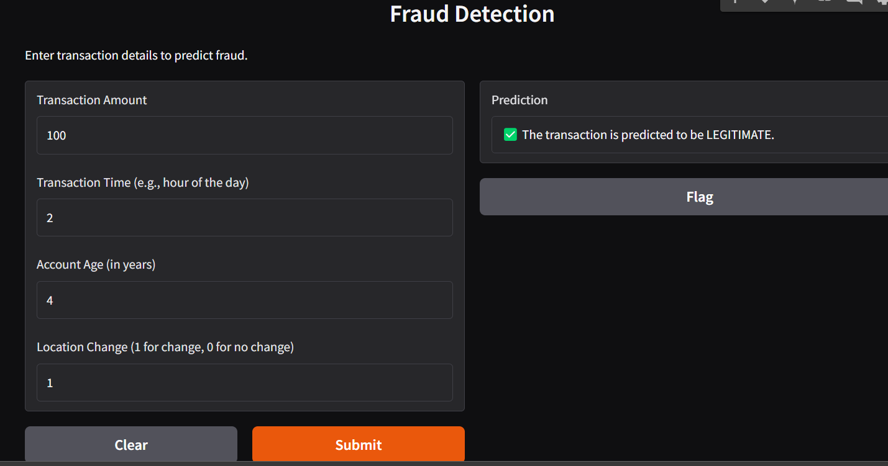
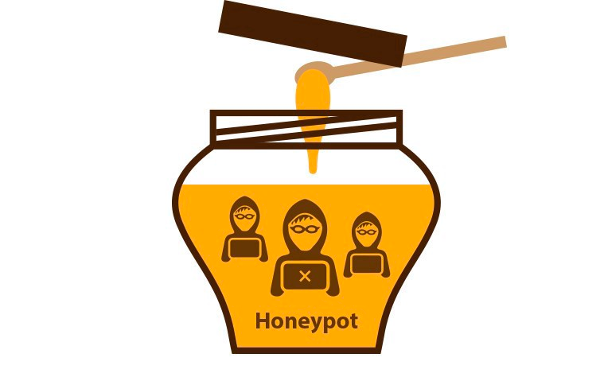

I am a licensed Digital Forensics Professional by the Cyber Security Authority (CSA), Ghana, specializing in Digital Forensics and Incident Response (DFIR). My work spans forensic analysis, threat detection, malware examination, and evidence preservation across complex enterprise environments.

ThreatHunter AI is a Security Operations Center (SOC) triage platform that ingests raw log files, runs them through a 40-rule detection engine, correlates findings into structured incidents, and uses an AI engine to generate expert-level triage reports, all without a backend server.

Developed an OSINT email reconnaissance tool in Python utilizing proxy rotation and multi-threading to collect public emails from certificate logs and search engines.

Executed a structured mobile forensic investigation on an iOS 13 iPhone SE backup image. Parsed proprietary iTunes backup structures, extracted key artifacts including device telemetry, user accounts, application data, and communication logs, and performed cross-tool evidence validation.

Conducted a penetration test on OWASP Juice Shop using Docker & Kali Linux. Leveraged Burp Suite and Nmap to exploit SQL Injection, Stored/Reflected XSS, Insecure File Upload, and Directory Traversal.

Implemented a machine learning model for detecting fraudulent transactions based on key features such as Transaction Amount, Time, Account Age, and Location Changes to classify suspicious activity.

Deployed Cowrie honeypot in Dockerized Kali Linux to capture live SSH/Telnet attacker behavior, credentials, payload attempts, and timestamps in real time.
Feel free to reach out for cybersecurity inquiries, project collaborations, or security research opportunities!